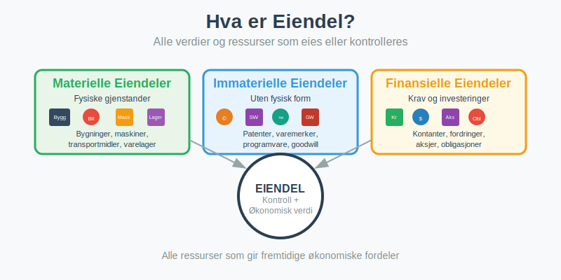
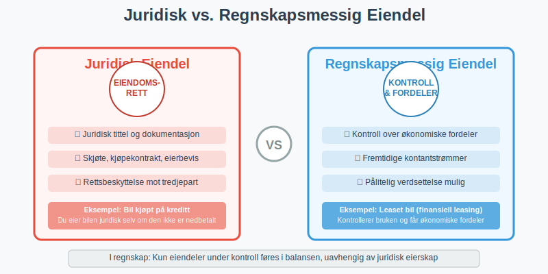
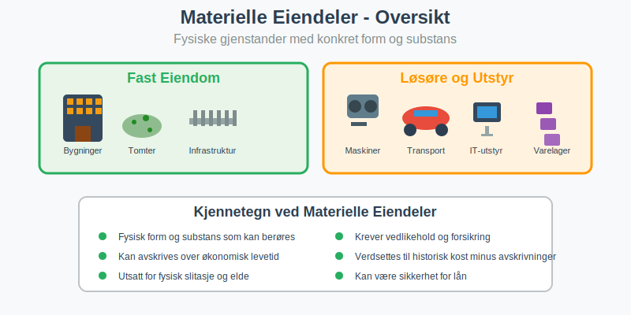
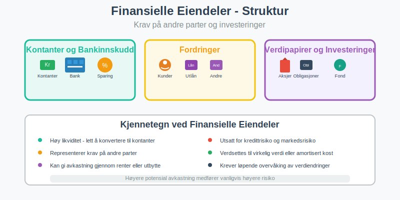
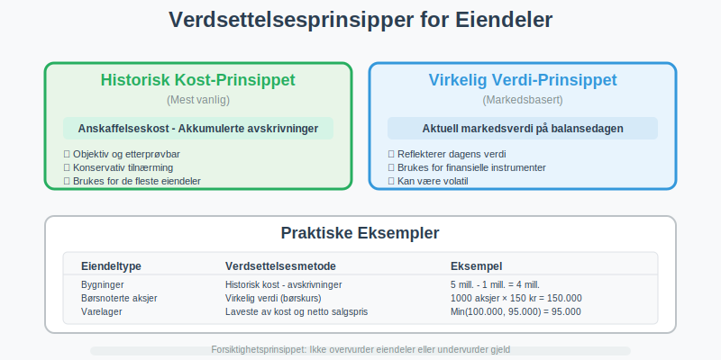
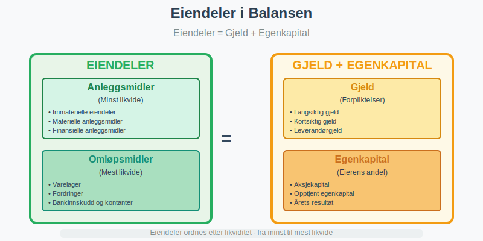
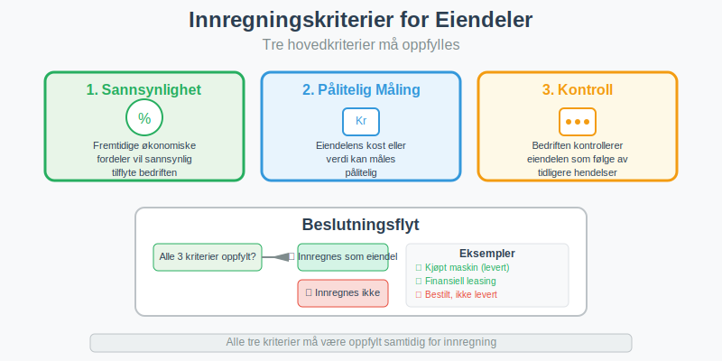
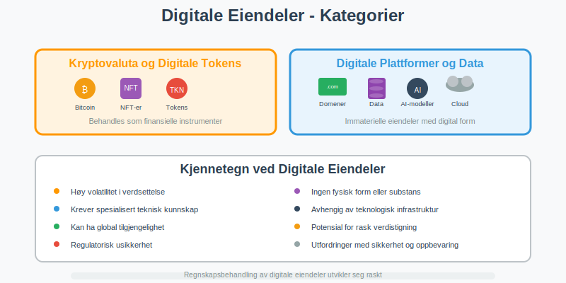
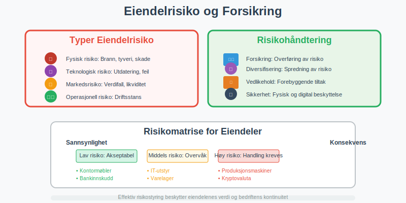

Eiendel er et grunnleggende begrep i regnskap som omfatter alle verdier og ressurser som en person eller bedrift eier og kontrollerer. I regnskapssammenheng brukes ofte begrepet aktiva synonymt med eiendel, men eiendel er det bredere norske begrepet som dekker alt fra fast eiendom til immaterielle rettigheter. Korrekt identifisering og bokføring av eiendeler er avgjørende for å gi et riktig bilde av en bedrifts økonomiske stilling.

Seksjon 1: Definisjon og Juridisk Grunnlag
1.1 Hva er en Eiendel?
En eiendel er enhver ressurs eller verdi som:
- Eies eller kontrolleres av en person eller juridisk enhet
- Har økonomisk verdi som kan måles i kroner
- Kan omsettes eller brukes til å generere inntekter
- Gir rettigheter til fremtidige økonomiske fordeler
1.2 Juridisk vs. Regnskapsmessig Eiendel
Det er viktig å skille mellom juridisk eierskap og regnskapsmessig kontroll:

| Aspekt | Juridisk Eiendel | Regnskapsmessig Eiendel |
|---|---|---|
| Grunnlag | Eiendomsrett og juridisk tittel | Kontroll og økonomiske fordeler |
| Eksempel | Bil kjøpt på kreditt (eier bilen) | Leaset bil (kontrollerer bruken) |
| Dokumentasjon | Skjøte, kjøpekontrakt | Leasingavtale, kontrollrettigheter |
| Regnskapsføring | Kun hvis også kontrollert | Føres som eiendel ved kontroll |
Seksjon 2: Klassifisering av Eiendeler
2.1 Materielle Eiendeler
Materielle eiendeler er fysiske gjenstander med konkret form og substans:

Fast Eiendom
- Tomter og grunn: Byggeplasser, jordbruksareal, skogsområder
- Bygninger: Kontorer, fabrikker, lagerhaller, boliger
- Infrastruktur: Veier, broer, rørledninger på egen grunn
Løsøre og utstyr
- Maskiner og produksjonsutstyr: Industrielle anlegg, verktøy
- Transportmidler: Biler, lastebiler, båter, fly
- Inventar og møbler: Kontormøbler, datautstyr, telefonsystemer
- Varelager: Råvarer, halvfabrikata, ferdigvarer
For detaljert informasjon om hvordan anleggsmidler klassifiseres og behandles, se vår omfattende guide.
2.2 Immaterielle Eiendeler
Immaterielle eiendeler mangler fysisk form men har likevel økonomisk verdi:
Intellektuelle Rettigheter
- Patenter: Beskyttelse av oppfinnelser og teknologi
- Varemerker: Registrerte merkenavn og logoer
- Opphavsrett: Rettigheter til kreative verk
- Designrettigheter: Beskyttelse av produktdesign
Forretningsrettigheter
- Goodwill: Merverdi ved oppkjøp av virksomheter
- Kundelister: Verdifulle kundedatabaser
- Franchiserettigheter: Rett til å drive under etablert merkenavn
- Programvare og lisenser: Spesialiserte datasystemer
Immaterielle eiendeler behandles gjennom amortisering i stedet for tradisjonelle avskrivninger.
2.3 Finansielle Eiendeler
Finansielle eiendeler representerer krav på andre parter eller investeringer:

Kontanter og Bankinnskudd
- Kontanter: Sedler og mynter i kasse
- Bankinnskudd: Penger på bedriftens bankkontoer
- Kortsiktige innskudd: Sparekonto, pengemarkedsfond
Fordringer
- Kundefordringer: Penger kunder skylder (debitor)
- Lån til andre: Aksjonærlån fra AS
- Andre fordringer: Forskuddsbetalte kostnader, depositum
Verdipapirer og Investeringer
- Aksjer: Eierandeler i andre selskaper
- Obligasjoner: Rentebærende verdipapirer
- Fond: Investeringer i verdipapirfond
Seksjon 3: Verdsettelse og Måling av Eiendeler
3.1 Verdsettelsesprinsipper
Eiendeler verdsettes etter etablerte regnskapsprinsipper for å sikre konsistens og sammenlignbarhet:

Historisk Kost-Prinsippet
De fleste eiendeler verdsettes til anskaffelseskost justert for:
- Akkumulerte avskrivninger
- Nedskrivninger ved verdifall
- Oppskrivninger i spesielle tilfeller
Virkelig Verdi-Prinsippet
Enkelte eiendeler, særlig finansielle instrumenter, verdsettes til markedsverdi:
| Eiendeltype | Verdsettelsesmetode | Praktisk Eksempel |
|---|---|---|
| Fast eiendom | Historisk kost - avskrivninger | Kontor kjøpt for 8 mill., avskrevet 2 mill. = 6 mill. |
| Maskiner | Historisk kost - avskrivninger | Maskin kjøpt for 500.000, avskrevet 200.000 = 300.000 |
| Kundefordringer | Pålydende - tapsavsetning | Fordring 150.000, tapsrisiko 3% = 145.500 |
| Børsnoterte aksjer | Virkelig verdi (markedspris) | 1000 aksjer à 250 kr = 250.000 |
| Varelager | Laveste av kost og netto salgspris | Varer kjøpt for 80.000, kan selges for 75.000 = 75.000 |
3.2 Spesielle Verdsettelsesutfordringer
Immaterielle Eiendeler
Verdsettelse av immaterielle eiendeler kan være kompleks:
- Internt utviklede eiendeler: Kun direkte kostnader kan aktiveres
- Kjøpte eiendeler: Verdsettes til anskaffelseskost
- Goodwill: Testes årlig for verdifall
Finansielle Eiendeler
- Kortsiktige investeringer: Virkelig verdi med verdiendringer i resultat
- Langsiktige investeringer: Kan verdsettes til kost eller virkelig verdi
- Valutaeksponering: Omregnes til norske kroner på balansedagen
For dypere innsikt i verdivurderingsmetoder, se vår guide til balansebasert verdivurdering.
Seksjon 4: Eiendeler i Balansen
4.1 Presentasjon i Balansen
Eiendeler presenteres på venstre side av balansen og følger regnskapsligningen:
Eiendeler = Gjeld + Egenkapital

Balansens Oppbygning
Eiendeler ordnes etter likviditet (hvor lett de kan konverteres til kontanter):
-
Anleggsmidler (minst likvide)
- Immaterielle eiendeler
- Materielle anleggsmidler
- Finansielle anleggsmidler
-
Omløpsmidler (mest likvide)
- Varelager
- Fordringer
- Investeringer
- Bankinnskudd og kontanter
4.2 Nøkkeltall og Analyse
Eiendeler brukes i viktige finansielle nøkkeltall:
| Nøkkeltall | Formel | Betydning |
|---|---|---|
| Arbeidskapital | Omløpsmidler - Kortsiktig gjeld | Likviditet på kort sikt |
| Eiendelomsetning | Omsetning / Totale eiendeler | Effektivitet i eiendelbruk |
| Egenkapitalrentabilitet | Resultat / Egenkapital | Avkastning på egenkapital |
| Gjeldsgrad | Total gjeld / Totale eiendeler | Finansieringsstruktur |
Seksjon 5: Regnskapsføring av Eiendeler
5.1 Innregning av Eiendeler
For at en eiendel skal innregnes i regnskapet, må den oppfylle spesifikke kriterier:

Innregningskriterier
- Sannsynlighet: Det er sannsynlig at fremtidige økonomiske fordeler vil tilflyte bedriften
- Pålitelig måling: Eiendelens kost eller verdi kan måles pålitelig
- Kontroll: Bedriften kontrollerer eiendelen som følge av tidligere hendelser
Praktiske Eksempler på Innregning
| Situasjon | Innregnes? | Begrunnelse |
|---|---|---|
| Kjøpt maskin på kreditt | ✓ Ja | Kontroll overført ved levering |
| Bestilt maskin, ikke levert | ✗ Nei | Ingen kontroll før levering |
| Leaset bil (finansiell leasing) | ✓ Ja | Kontroll over økonomiske fordeler |
| Leaset bil (operasjonell leasing) | ✗ Nei | Begrenset kontroll og periode |
| Internt utviklet programvare | ✓ Delvis | Kun direkte utviklingskostnader |
5.2 Løpende Måling og Oppfølging
Avskrivninger og Amortisering
Eiendeler med begrenset levetid avskrives systematisk:
- Lineær avskrivning: Lik avskrivning hvert år
- Degressiv avskrivning: Høyere avskrivning i begynnelsen
- Produksjonsbasert avskrivning: Basert på faktisk bruk
Nedskrivninger
Når eiendelens verdi faller permanent under bokført verdi:
- Nedskrivningstest: Årlig vurdering av verdifall
- Gjenvinnbart beløp: Høyeste av bruksverdi og virkelig verdi
- Reversering: Nedskrivninger kan reverseres (unntatt goodwill)
Seksjon 6: Særlige Eiendeltyper
6.1 Digitale Eiendeler
Med digitaliseringen har nye eiendeltyper oppstått:

Kryptovaluta og Digitale Tokens
- Bitcoin og andre kryptovalutaer: Behandles som finansielle instrumenter
- NFT-er (Non-Fungible Tokens): Unike digitale eiendeler
- Utility tokens: Rettigheter til tjenester eller produkter
Digitale Plattformer og Data
- Domenenavn: Verdifulle internettadresser
- Kundedatabaser: Strukturerte kundedata
- Algoritmer og AI-modeller: Proprietære teknologiske løsninger
- Cloud-baserte løsninger: Software-as-a-Service rettigheter
6.2 Miljø- og Bærekraftseiendeler
Økende fokus på bærekraft skaper nye eiendelkategorier:
Karbon- og Miljørettigheter
- Karbonkreditter: Rettigheter til CO2-utslipp
- Fornybar energi-sertifikater: Grønne energirettigheter
- Miljøfond og grønne obligasjoner: Bærekraftige investeringer
Naturkapital
- Skogressurser: Verdien av tømmer og karbonlagring
- Vannrettigheter: Tilgang til vannressurser
- Biodiversitetsrettigheter: Rettigheter til genetiske ressurser
Seksjon 7: Risikostyring og Eiendeler
7.1 Eiendelrisiko og Forsikring
Eiendeler er utsatt for ulike risikoer som må håndteres:

Typer Eiendelrisiko
- Fysisk risiko: Brann, tyveri, naturkatastrofer
- Teknologisk risiko: Utdatering, systemfeil
- Markedsrisiko: Verdifall, likviditetsrisiko
- Operasjonell risiko: Driftsstans, menneskelige feil
Risikohåndtering
- Forsikring: Overføring av risiko til forsikringsselskap
- Diversifisering: Spredning av risiko på flere eiendeler
- Vedlikehold: Forebyggende tiltak for å bevare verdi
- Sikkerhetstiltak: Fysisk og digital beskyttelse
7.2 Internkontroll og Eiendelsikring
Effektiv internkontroll sikrer at eiendeler beskyttes og rapporteres korrekt:
Kontrollaktiviteter
- Fysisk sikring: Låser, alarmer, adgangskontroll
- Autorisasjon: Godkjenning av eiendelstransaksjoner
- Dokumentasjon: Fullstendig bilagsføring
- Avstemming: Regelmessig kontroll mot fysisk beholdning
Seksjon 8: Skattemessige Aspekter
8.1 Skattemessig vs. Regnskapsmessig Behandling
Skattemessig og regnskapsmessig behandling av eiendeler kan avvike:
| Aspekt | Regnskapsmessig | Skattemessig |
|---|---|---|
| Avskrivninger | Økonomisk levetid | Skattemessige satser |
| Nedskrivninger | Ved verdifall | Kun ved realisert tap |
| Oppskrivninger | Tillatt i visse tilfeller | Ikke tillatt |
| Gevinst/tap | Ved verdiendring | Ved realisasjon |
Skattemessige Avskrivninger
- Saldogrupper: Eiendeler grupperes etter type
- Avskrivningssatser: Fastsatt av skattemyndighetene
- Maksimalavskrivning: Øvre grense for årlig avskrivning
8.2 Merverdiavgift på Eiendeler
MVA-behandling av eiendeler varierer:
- Fradragsberettiget MVA: På eiendeler brukt i avgiftspliktig virksomhet
- Ikke-fradragsberettiget MVA: Inngår i eiendelens anskaffelseskost
- Blandede formål: Forholdsmessig fordeling av MVA-fradrag
Seksjon 9: Internasjonale Standarder og Eiendeler
9.1 IFRS og Norske Regnskapsregler
Norge følger internasjonale regnskapsstandarder (IFRS) for børsnoterte selskaper:

Hovedforskjeller
- Oppskrivninger: IFRS tillater oppskrivning av flere eiendeltyper
- Komponentavskrivning: IFRS krever mer detaljert avskrivning
- Virkelig verdi: Bredere bruk av markedsverdi i IFRS
- Nedskrivningstester: Mer omfattende testing under IFRS
9.2 Fremtidige Utviklingstrender
Regnskapsføring av eiendeler utvikler seg kontinuerlig:
Teknologiske Endringer
- Automatisering: AI-basert eiendelregistrering og -verdsettelse
- Blockchain: Transparent og sporbar eiendelregistrering
- IoT (Internet of Things): Sanntidsovervåking av eiendeler
- Prediktiv analyse: Forbedret estimering av levetid og verdi
Regulatoriske Endringer
- Bærekraftsrapportering: Økt fokus på miljøpåvirkning
- Digitale eiendeler: Nye standarder for kryptovaluta og NFT-er
- Leasingstandard: Endret behandling av leasingavtaler
- Immaterielle eiendeler: Oppdaterte regler for digitale rettigheter
Konklusjon
Eiendeler er fundamentale byggeklosser i enhver bedrifts økonomi og regnskapsføring. Fra tradisjonelle materielle eiendeler som bygninger og maskiner til moderne digitale eiendeler som programvare og kryptovaluta, krever hver eiendeltype spesialisert kunnskap om klassifisering, verdsettelse og regnskapsføring.
Korrekt håndtering av eiendeler sikrer:
- Nøyaktig finansiell rapportering som gir interessenter et riktig bilde av bedriftens stilling
- Effektiv ressursbruk gjennom systematisk oppfølging og vedlikehold
- Regelverksetterlevelse i henhold til norske og internasjonale standarder
- Risikostyring som beskytter bedriftens verdier
For bedrifter som ønsker å optimalisere sin eiendelforvaltning, er det essensielt å etablere robuste systemer for dokumentasjon, regelmessig verdsettelse og strategisk planlegging av investeringer.
Ved å forstå de ulike aspektene ved eiendeler - fra juridiske rettigheter til regnskapsmessig behandling - kan bedriftsledere ta informerte beslutninger som styrker selskapets finansielle posisjon og fremtidige vekstmuligheter.